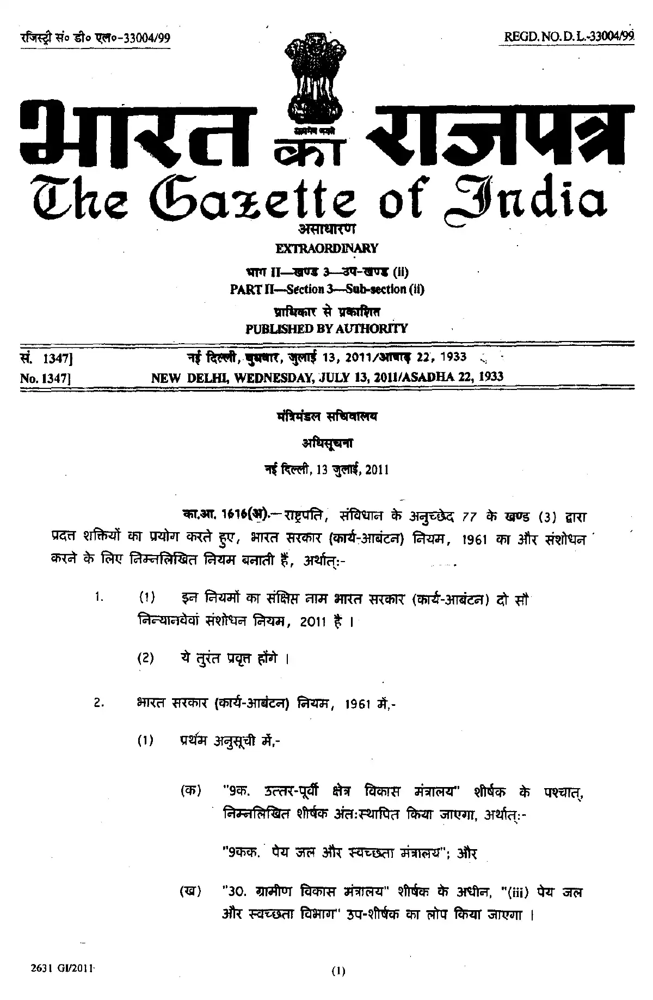
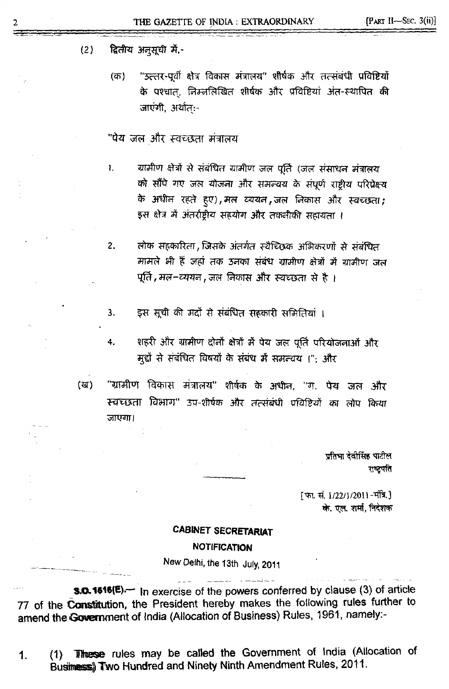
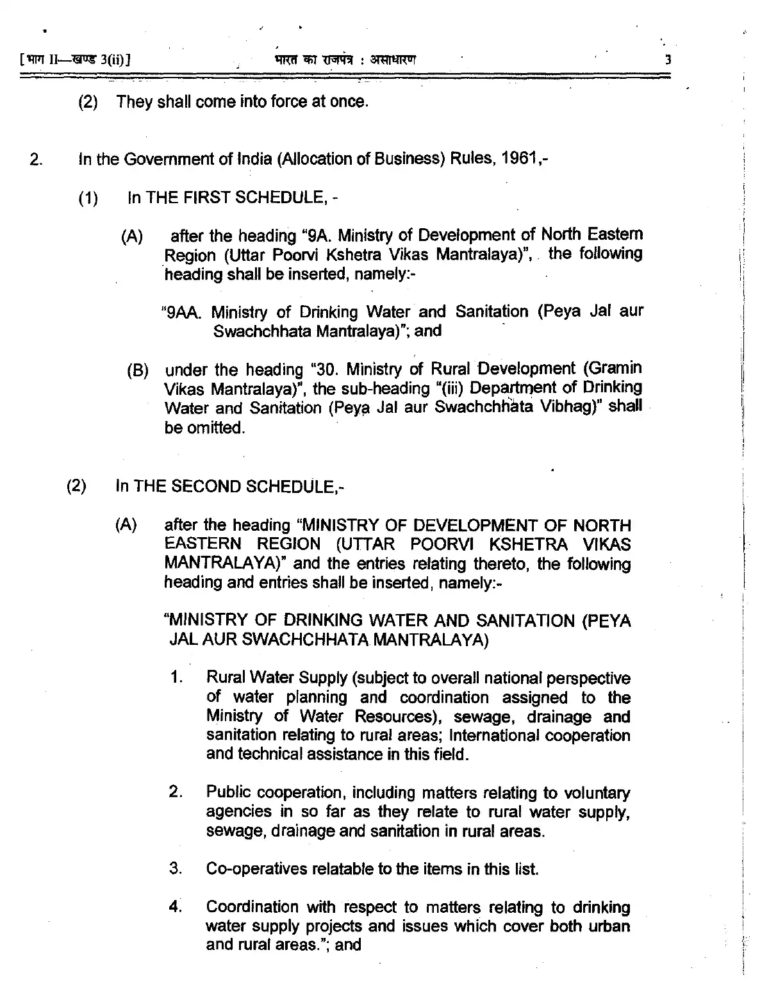
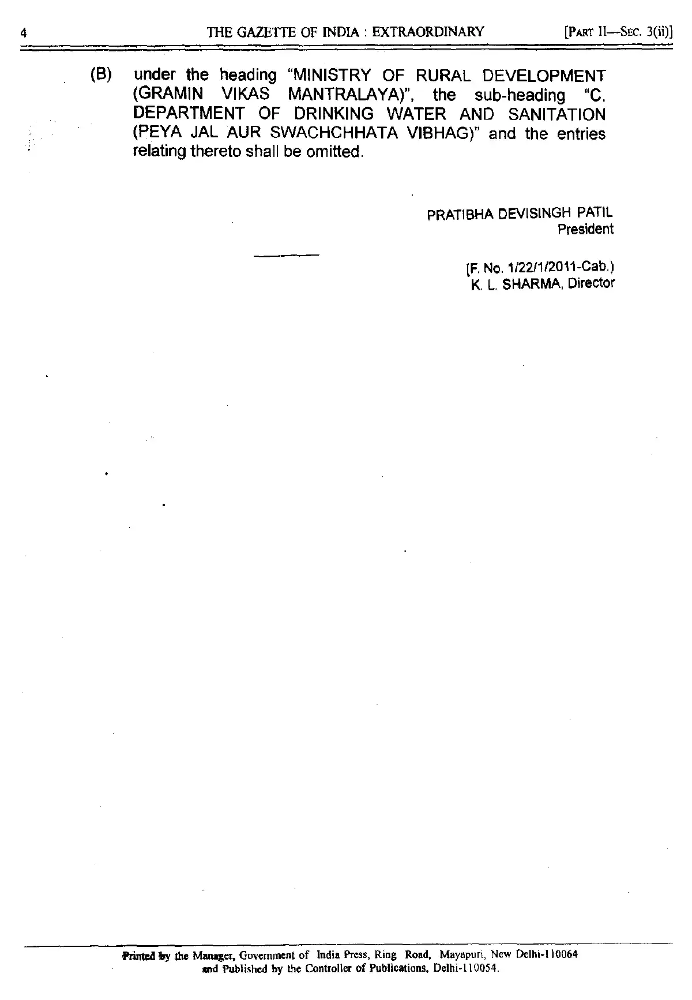

Amendment #299 (S.O. 1616(E), 2011)
4 changes: 2 to the First Schedule, 2 to the Second Schedule. 4 applied
What it did to the ministries
- spun offMinistry of Drinking Water and Sanitation is separated from Ministry of Rural Development (4 subjects) change 1, 2, 3, 4 · histories: Rural Development, Drinking Water and Sanitation
The order, page by page
Page 1 of 4

Page 2 of 4

Page 3 of 4

123after Schedule 1 › Ministry of Development of North Eastern Region
- 9AA. Ministry of Drinking Water and Sanitation
applied at schedule 1 › ministry 9AA in the Rules after #299
Schedule 1 › Ministry of Rural Development › Department of Drinking Water and Sanitation
applied at schedule 1 › ministry 31 › department iii in the Rules after #299
after Schedule 2 › MINISTRY OF DEVELOPMENT OF NORTH EASTERN REGION
- MINISTRY OF DRINKING WATER AND SANITATION
- 1. Rural Water Supply (subject to overall national perspective of water planning and coordination assigned to the Ministry of Water Resources), sewage, drainage and sanitation relating to rural areas; International cooperation and technical assistance in this field.
- 2. Public cooperation, including matters relating to voluntary agencies in so far as they relate to rural water supply sewage, drainage and sanitation in rural areas.
- 3. Co-operatives relatable to the items in this list.
- 4. Coordination with respect to matters relating to drinking water supply projects and issues which cover both urban and rural areas.
applied at schedule 2 › ministry MINISTRY OF DRINKING WATER AND SANITATION in the Rules after #299
Page 4 of 4

4Schedule 2 › MINISTRY OF RURAL DEVELOPMENT › DEPARTMENT OF DRINKING WATER AND SANITATION
applied at schedule 2 › ministry MINISTRY OF RURAL DEVELOPMENT › department C in the Rules after #299
How this document was read
Edits to the reading
| Date | By | Edit | Before → after |
|---|---|---|---|
| 5 November 2026 | mukundesh | word corrected |
From the Government of India (Allocation of Business) Rules, 1961 and their amendments, as published by the Cabinet Secretariat (cabsec.gov.in), read by orgpedia. The readings of the older scanned gazettes have known gaps.